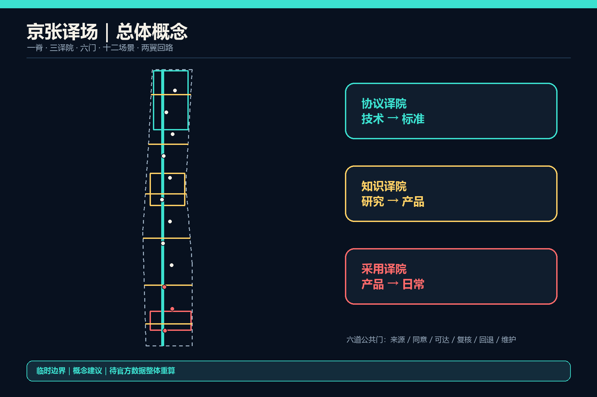
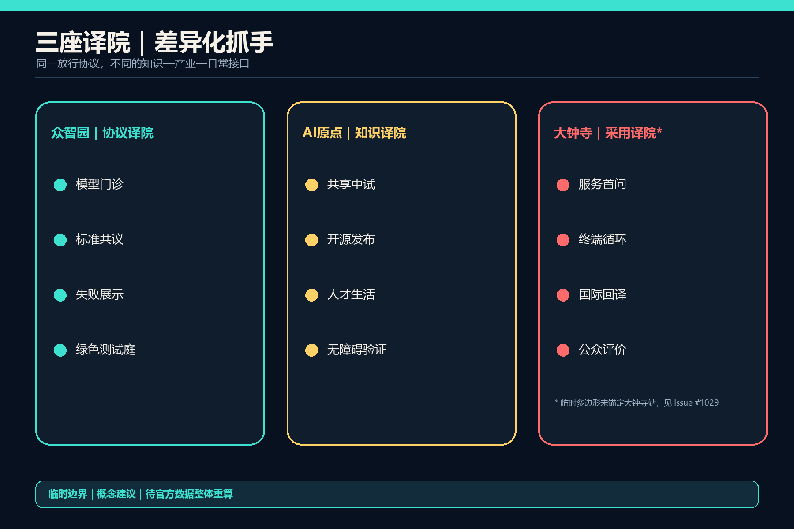
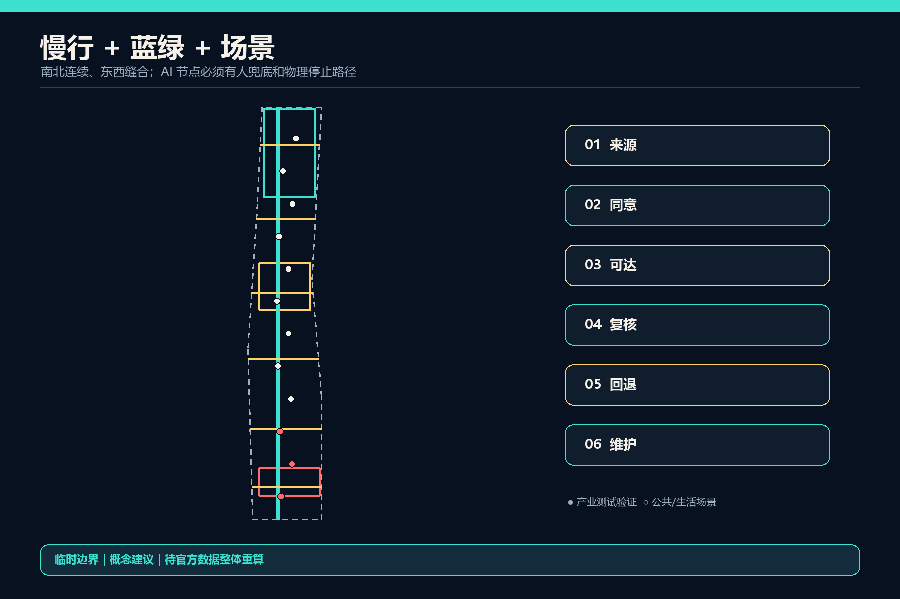
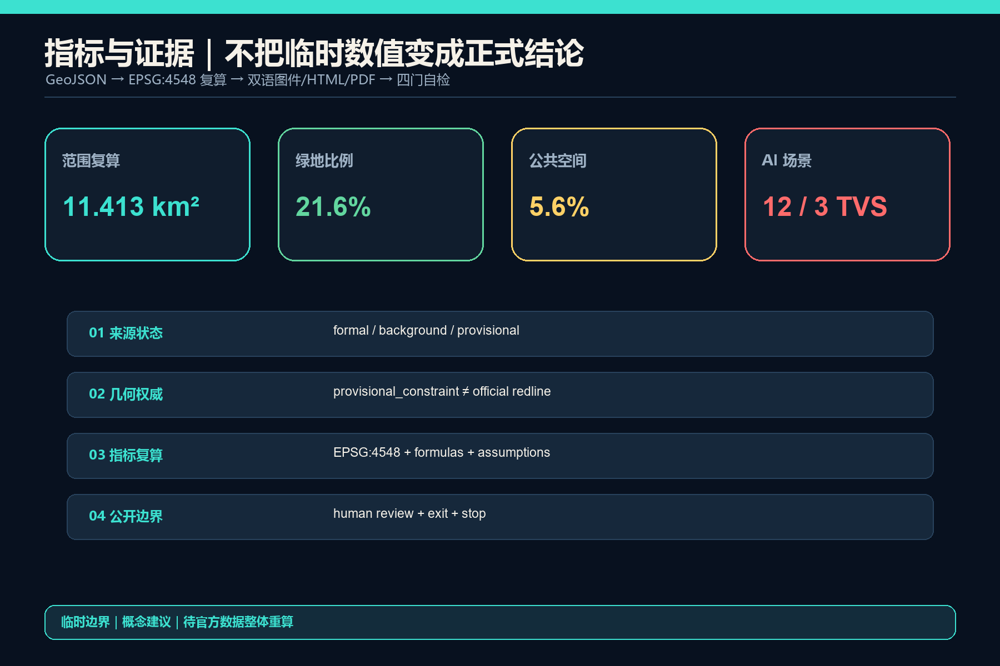

京张译场 JING-ZHANG TRANSLATION GROUNDS：把前沿智能翻译成可验证的城市公共价值
以一条翻译绿脊、三座译院、六道公共门和十二个AI场景，把技术—知识—产品—日常连接成可验证、可退出、有人兜底的城市公共价值链。空间表达基于临时边界，不替代正式规划。
京张译场 JING-ZHANG TRANSLATION GROUNDS
把前沿智能翻译成可验证的城市公共价值。所有空间落地建议均为概念建议与参考方案，可供专业团队深化研究；不替代正式规划，不构成政府审定结论。
设计依据与资料清单
本方案把官方公告确认的三层范围、三处重点区、设计目标和任务作为主控，把面向智能体任务书的三大定位、五大功能、六项任务作为开放共创要求 来源 来源。来源登记表只允许已批准资料支撑相应用途，处理事实包仅作导航；两者不新增权威结论 来源 来源。
现有总体设计边界与重点区 polygon 均为仓库临时约束，只用于生成、可视化和投稿入口自检 来源 来源。现状建筑、道路红线、文保控制、市政和权属数据仍待正式资料补齐，本方案因此把“可逆、可停、先验证”作为比伪精确体量更重要的设计纪律 深度。

三层范围工作框架
“京张译场”不是新画一条红线，而是把 43.6 平方公里统筹研究、约 11.4 平方公里总体设计和 368.4 公顷重点区组织成同一条转译链：统筹层决定资源如何协同，总体层安排公共空间与更新原型，重点层用三座译院验证具体场景。约 11.4 平方公里只引用公告约值；提交几何复算值用于内部一致性，不冒充官方精确面积 标准 空间数据 深度。
总体结构为“一脊、三译院、六门、十二场景、两翼回路”。京张翻译绿脊承担南北文化与慢行连续；众智园“协议译院”、AI原点“知识译院”、大钟寺“采用译院”分别把研究翻成标准、知识翻成产品、产品翻成日常服务；中关村科技服务翼与小月河场景赋能翼构成资金/IP/人才与场景反馈回路 深度 空间数据。

统筹研究范围产业与未来城市研究
六个案例只提炼机制，不照搬尺度或政策。剑桥 Kendall Square 提示创新区要从“园区”变成创新社区 来源；新加坡 one-north 说明模块化创业空间应与工作—生活—游憩—学习环境共同运营 来源。首尔 AI Hub 提供从教育、孵化到验证的阶段服务链 来源；Paris-Saclay 的 Urba(IA) 强调用用户委员会比较和评估城市 AI 方案 来源。伦敦 Knowledge Quarter 展示文化、研究、商业和社区的跨机构协作 来源；多伦多 Vector Institute 展示研究、产业与公共领域的持续召集机制 来源。
京张的转化不是复制“硅谷外观”，而是设置六道公共门：来源门核对数据与知识产权，同意门说明参与和退出，可达门保证无障碍与低数字门槛，复核门明确人工责任，回退门保留暂停和降级，维护门公开运营与更新责任。六门既是东西缝合的公共空间，也是每项 AI 服务进入日常前的放行协议 标准 空间数据。
视觉识别采用原创“双轨译括号”：两条京张轨线在中央形成开放括号，青绿表示可追溯的公共路径，暖黄表示人的判断。标志不借用企业商标；“译场 / Translation Grounds”同时指空间场所与持续翻译的共同实践。
总体设计范围城市更新与控规深度城市设计
总体设计以完整用地分区为机器审查底板：西侧布置共居与社区服务原型，中部连续绿脊，东侧由南向北组织城市服务、知识转译教育和全栈研发验证。分区由同一临时边界切分，覆盖完整且无缝，但用途只是方案分类，不是已批控规 标准 空间数据 深度。
城市更新遵循“先留用、再适配、后新增”。十二个建筑基底只表达译院、共享服务和开放验证所需的空间原型，不指认现状楼宇的拆除或权属变化。缺少正式控规时，容积率、高度、密度、退线均保持待确认；体量控制仅提出首层开放、可变隔断、低扰动屋顶设备和沿绿脊退让的深化方向 深度 深度 空间数据。
重点区域详细设计
三座译院既分工又形成闭环 深度：
| 重点区 | 译院定位 | 空间动作 | 先行验证 |
|---|---|---|---|
| 众智园 | 协议译院：技术→标准 | 绿色测试庭、标准共议室、失效展示廊、清河界面公共客厅 | 开源模型门诊、端侧算力负荷彩排 空间数据 |
| 北京AI原点社区 | 知识译院：研究→产品 | 近校成果街、共享中试间、人才生活站、开源发布阶梯 | 多模态无障碍验证室、青少年AI造物院 空间数据 |
| 大钟寺 | 采用译院：产品→日常 | 国际回译厅、终端修理循环站、服务首问台、公共评价场 | 城市服务翻译、智能终端采用与回访 空间数据 |
大钟寺临时 polygon 尚未锚定大钟寺站；Issue #1029 的复核表明当前位置存在约 2.26 公里的站点关系疑问。本方案不自行平移上游几何，也不把四象限连通画成已确定工程；公告任务在文字上保留，所有空间依赖待官方 polygon 到位后整体重算 来源 指标。

AI 创新生态、人才画像与 AI+ 场景
七类使用者共同决定场景：研究者需要可复现环境，初创团队需要低成本验证，成熟企业需要采用反馈，居民需要清楚的人工服务入口，老年人与低数字能力者需要不被强制数字化，残障使用者需要多模态可达，国际访客需要跨语解释。场景不以持续识别人群为前提，只使用最少必要的公开或经授权数据。
十二张场景卡以 scenario_ids 登记在六道公共门空间中，前三项为产业测试验证场景 指标 指标 空间数据：
1. 开源模型门诊：带数据卡、失败样本和人工签字的模型复诊。 2. 端侧算力负荷彩排：在限定能耗与安全边界内测试边缘部署。 3. 多模态无障碍验证室：由残障使用者参与语音、视觉、触觉和人工替代测试。 4. 慢行共驾助手：只提供路线建议，不持续追踪个人。 5. 跨语城市服务台：机器翻译先行，复杂事项转人工。 6. 公共算法标签站：展示用途、数据、责任人、到期日与停止按钮。 7. 京张口述档案亭：授权后采集、可撤回、保留原始语境。 8. 青少年 AI 造物院：作品公开署名，监护与安全规则前置。 9. 法律服务首问台：只做信息分流，由持证专业人员复核。 10. 社区健康导引台：只做预约与健康信息导航，由医疗人员兜底。 11. 智能终端修理循环站：维修、再用和无品牌绑定的设备体验。 12. 国际演示—社区回译场：外部演示必须回应本地使用者问题并公开改动记录。
三个 AI 朝圣地标不是高耗能奇观：北段“公开协议塔”展示标准与失败记录；中段“百年一公里档案门”把铁路里程、创新贡献和公共记忆并置；南段“城市翻译厅”呈现产品如何被采用、质疑、修正和退出 指标。
用地、建筑规模与拆改留方案
用地面积由临时边界内的六个共享边界分区复算；中部绿脊与两侧功能带构成“公共翻译层—知识生产层—日常采用层”。用地代码采用仓库枚举，但自然资源部本地参考快照只保存通知页面，正式分类条目仍应在后续专业深化中回查官方附件 标准 深度。
建筑策略不是逐栋拆改留结论，而是一套调查后决策树：有安全与使用价值的建筑优先保留；能够通过首层开放、设备更新和共享空间改善的建筑优先改造；只有在权属、结构、文保、碳排和公共利益评估完成后，才讨论拆除或新增。提交的原型基底面积及覆盖比只用于方案内部一致性 指标 指标 深度。
交通、轨道、市政与公共服务设施
交通系统由一条南北慢行绿脊和六条东西“换译门”连接构成，表达跨越与接驳关系，不表达道路红线或桥隧工程。概念中心线长度用于检查网络是否随几何更新同步变化 指标 深度 空间数据。
市政与新基建采用“边缘小节点、集中审计、人工可接管”架构：译院可设置预约式算力、模型评测、数据授权和设备维修接口，但能源容量、管线、消防、排水与网络安全均待专项确认。公共服务始终保留人工窗口、非智能路径和离线说明 深度 标准。
蓝绿空间、公共空间与城市风貌
京张翻译绿脊把遗址叙事、步行骑行、无障碍伴行和低侵入 AI 体验放在同一连续空间中；六座公共门在东西向提供停留、解释和换乘。绿地与公共空间比例来自方案几何，不是法定绿地率或政府承诺 指标 指标 空间数据。
公共空间按六种译场组件深化：带人工窗口的服务台、可擦写的公共协议墙、可回收展架、低亮度状态灯、无障碍触觉/语音导视、带物理停止键的演示台。其面积与占比只说明本方案的公共性投入 指标 指标 深度。
城市风貌使用耐久金属、再生砖、木质触摸面和可更换信息层，形成“铁路工程理性 + 中关村开放实验 + AI 可解释界面”的基调。任何涉及文保建筑、清河或小月河控制、既有公园设施的动作都应低扰动、可逆并经专业审查 标准。

更新项目清单、实施政策与分期计划
| 项目 | 内容 | 依赖与退出条件 |
|---|---|---|
| T-01 翻译绿脊样段 | 导视、人工服务点、公共标签、无障碍伴行 | 文保/公园/交通许可；可整体撤除 |
| T-02 众智协议译院 | 标准共议、模型门诊、失败展示 | 建筑安全与运营主体确认 |
| T-03 原点知识译院 | 中试共享、开源发布、人才生活服务 | 校园园区边界与权属确认 |
| T-04 大钟寺采用译院 | 服务首问、终端循环、国际回译 | 官方重点区与站点锚定确认 |
| T-05 六道公共门 | 来源、同意、可达、复核、回退、维护 | 道路红线与无障碍专项确认 |
| T-06 十二场景轮换计划 | 90 天测试—公开复盘—续期/停止 | 数据授权、人工责任人、投诉渠道 |
第一阶段只做可逆标签、服务流程和临时场景；第二阶段在调查后进行三译院适应性更新；第三阶段等待官方边界和专项条件后再决定系统性建设。阶段一图形面积只表示依赖顺序，不是开工范围 指标 深度 深度。
年度运营形成“春季公开问题征集—夏季场景彩排—秋季全球译场周—冬季维护与退场审计”。开发者贡献以公开问题、测试记录和维护承诺计入荣誉系统；企业从演示进入小规模验证，再经居民/专业复核决定续期；国际传播强调“被验证与被修正的创新”，不宣称活动、招商、资金或政策已经确定。
指标体系、面积复算与合规矩阵
临时总体边界在 EPSG:4548 下的复算值记录于 site_area_sqm，只用于包内拓扑和比例一致性 指标 深度。绿地、公共空间、建筑原型、慢行中心线和分期指标均由相应 GeoJSON 复算；法定容积率、高度、道路面积率和现状保留比保持待正式数据补齐。

任务覆盖矩阵逐项响应公告 1.3、1.4、1.5 与 agent.1—agent.6；专业标准矩阵记录五项强制依据和一项未取得官方文件的资料缺口；设计深度矩阵把十五项成果深度全部落到正文、图层、指标、图纸和自检。complete 表示已提供当前临时资料条件下的可审查证据，不等于法定规划完成或官方批准。
风险、版权与合规说明
最大风险不是方案缺少数字，而是临时数字被截取后误读为官方结论。官方边界、重点区、控规、道路、建筑、文保、市政和公共服务底数到位时，必须整体重算并更新 manifest 与自检 深度。建筑工程设计文件深度规定尚无仓库可用的官方文件，本方案仅把它登记为资料缺口，不声称已据此完成建筑专业设计 标准。
全部图件由本包 GeoJSON 与指标程序化绘制；封面与 PDF 为本地生成的原创图形，不含商业地图瓦片、外部照片、企业商标、人物肖像或远程字体。HTML 无 CDN、远程脚本、跟踪、表单或网络请求。AI 场景均要求公开用途、最少数据、人工复核、投诉/退出与停止路径。
参考资料
完整的发布者、链接、访问日期、允许用途和限制保存在 sources.json；本节说明资料怎样影响设计，而不把案例经验误写成法定控制。官方公告与任务书确定三层范围、三大重点区和开放任务，直接形成“一脊—三译院—六门—十二场景”的任务结构 来源 来源。标准快照约束证据等级、公开程序和概念方案边界；六个国际案例只提供运营机制启发，不提供可直接移植的指标或许可结论 标准 来源。
空间底板来自仓库临时几何，因而面积、绿地和公共空间比例只用于验证包内拓扑与方案一致性 空间数据 指标。Issue #1029 证明 PROV-KEY-003 尚未锚定大钟寺站，本方案不自行移动上游多边形，也不据此声称站城关系已落实 来源。官方边界、控规、道路、建筑、文保、市政、权属和设施底数到位后，应整体复算几何与指标并重新运行四门自检；当前成果是可深化的开放共创投稿，不代表入选、批准或实施。